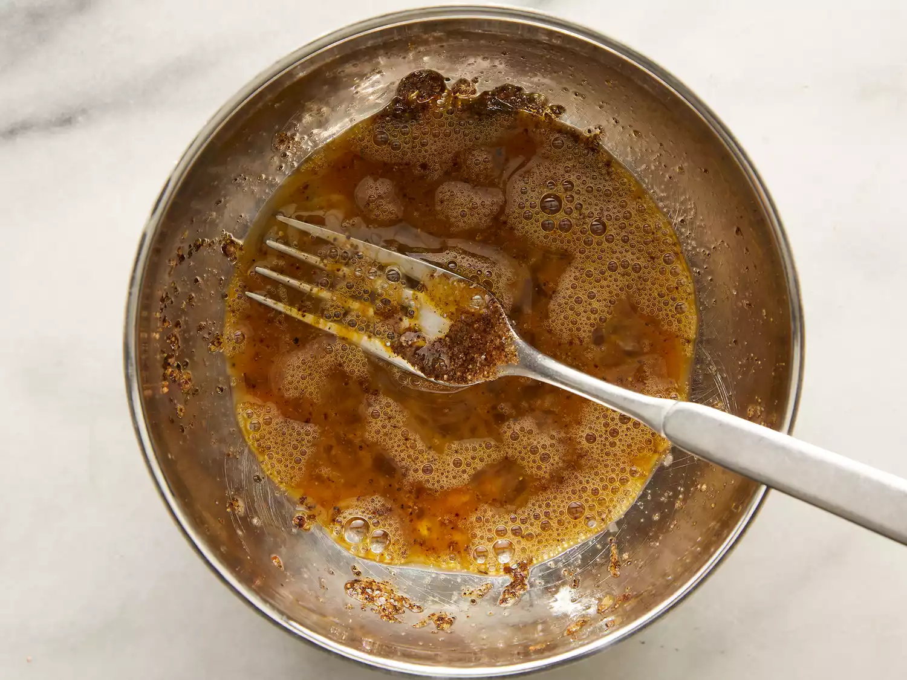
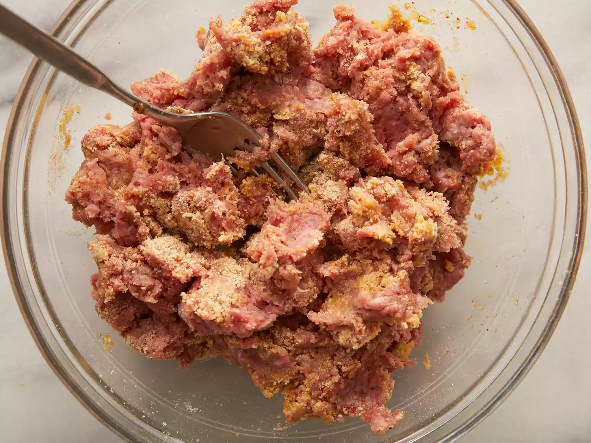
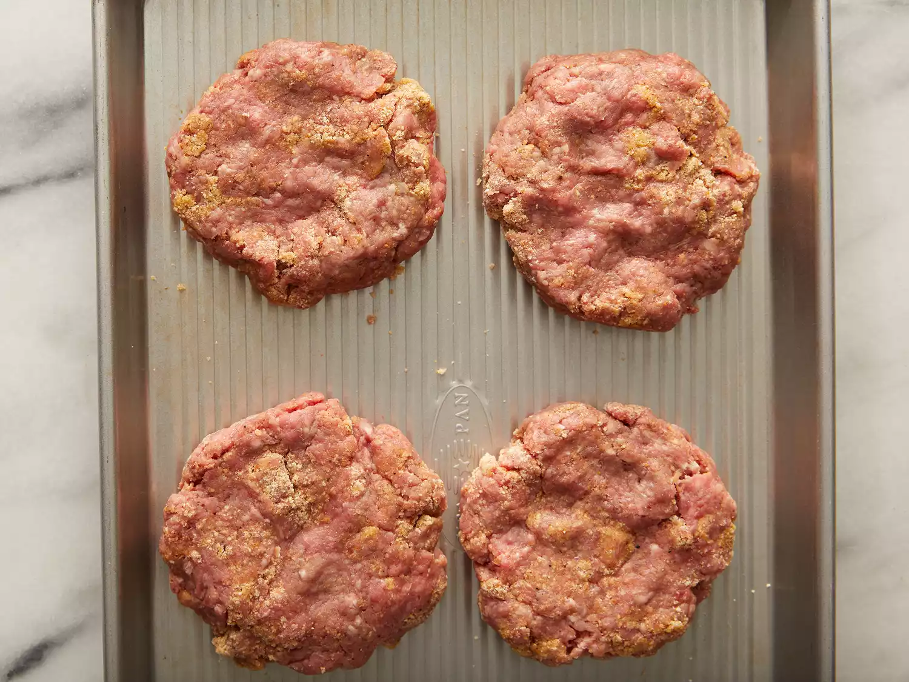
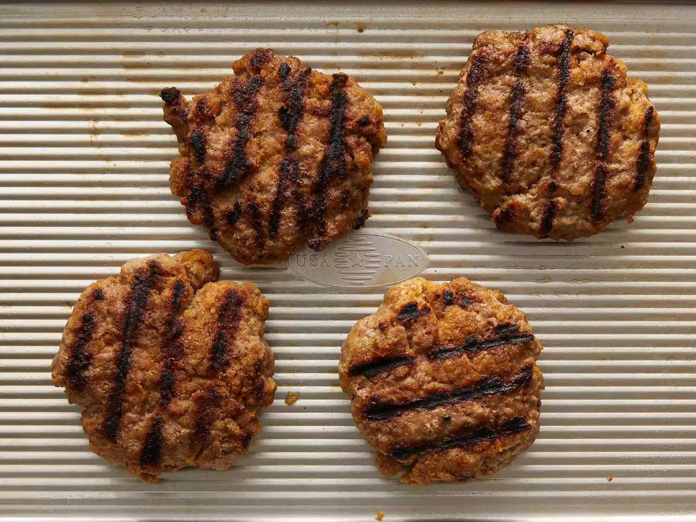
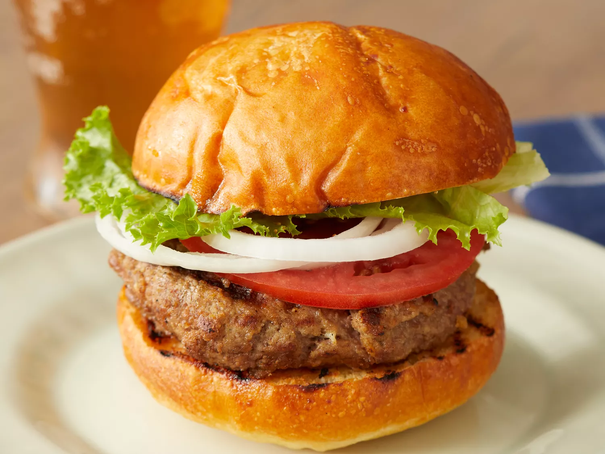

These burger patties are made with ground beef and an easy bread crumb mixture. Nothing beats a simple hamburger on a warm summer evening. Pile these burgers with your favorite condiments and pop open a cool drink!
Need a basic burger recipe that you can whip up in no time? We have the perfect one. With just 5 ingredients and 15 minutes of cooking time, this flavorful recipe is ready to be shared, topped, and sauced in any way you like! Learn how to make your own sizzling beef burger patties right here.
Nothing says summer quite like a juicy grilled burger. You'll find the full recipe below with step-by-step instructions, but here's what you can expect when you make these top-rated burger patties:
Begin by whisking the egg, salt, and pepper together in a large bowl. Then, add the ground beef and bread crumbs before forming the mixture into ¾-inch patties. Place the patties on a preheated grill and cook for six to eight minutes per side.
Make sure the beef's temperature reads at least 160 degrees F before serving, and you're ready to go. Top with classic condiments like mustard, ketchup, and mayo for full-fledged flavor.
Yes, you can freeze cooked burger patties for up to four months. Wrap the burgers in foil individually to discourage sticking before labeling and placing them in a freezer-safe bag.
"We've made these a few times now and the kids love it every time," shares home cook Christel K. "Despite the basic ingredients list it's an absolutely delicious burger, especially when dressed up with some toppings! We add spinach, old cheddar cheese, onions, pickles, plus mustard and mayo."
"Followed the recipe closely — good hamburgers," says dwolk. "One note of which to be aware: The recipe calls for 6-8 minutes a side! My ordinary outdoor propane three-burner grill: 3-4 a side and more than medium-rare."
"Pretty respectable burger, says reviewer berrymoore. "I think I'll add a little onion powder next time to add a little more depth to the flavor."
Editorial contributions by Rai Mincey
Preheat an outdoor grill for high heat and lightly oil grate.
Whisk together egg, salt, and pepper in a medium bowl.
Add ground beef and bread crumbs and mix with your hands or a fork until well blended.
Form into four 3/4-inch-thick patties.
Place patties on the preheated grill. Cover and cook 6 to 8 minutes per side, or to desired doneness. An instant-read thermometer inserted into the center should read at least 160 degrees F (70 degrees C).
Serve hot and enjoy!
